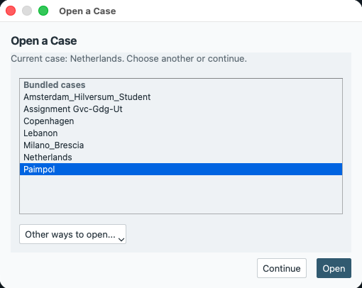
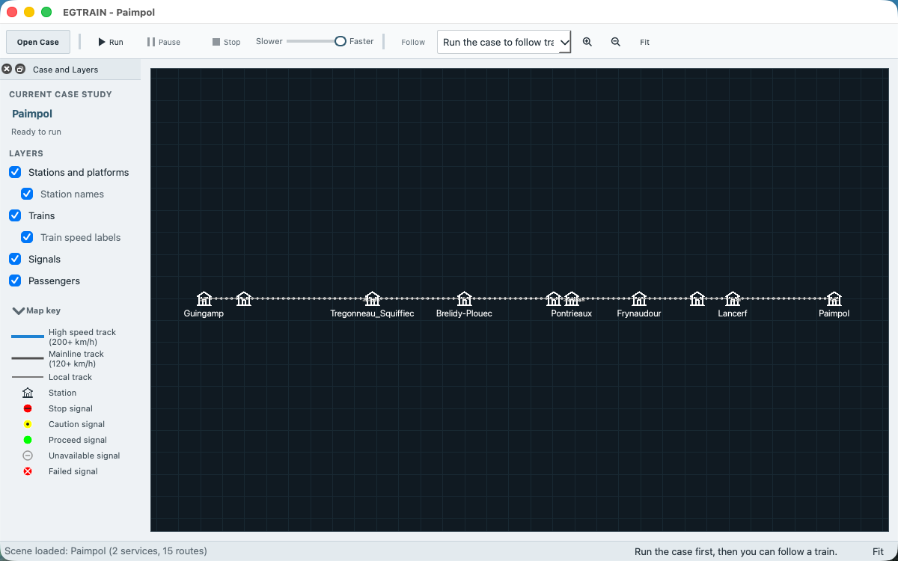
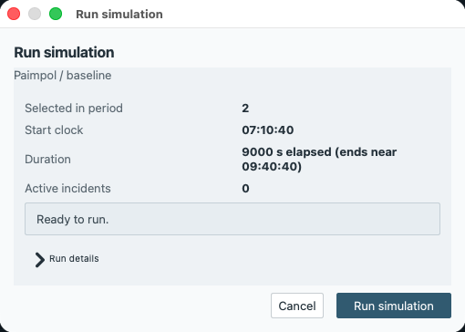
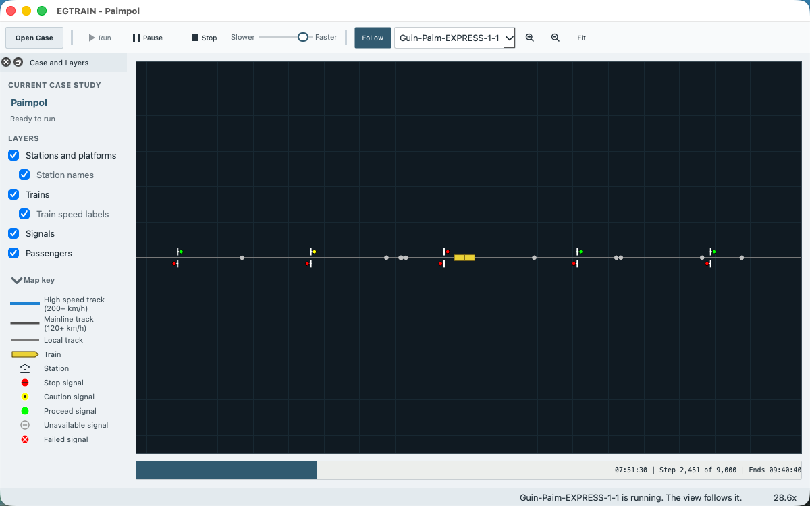
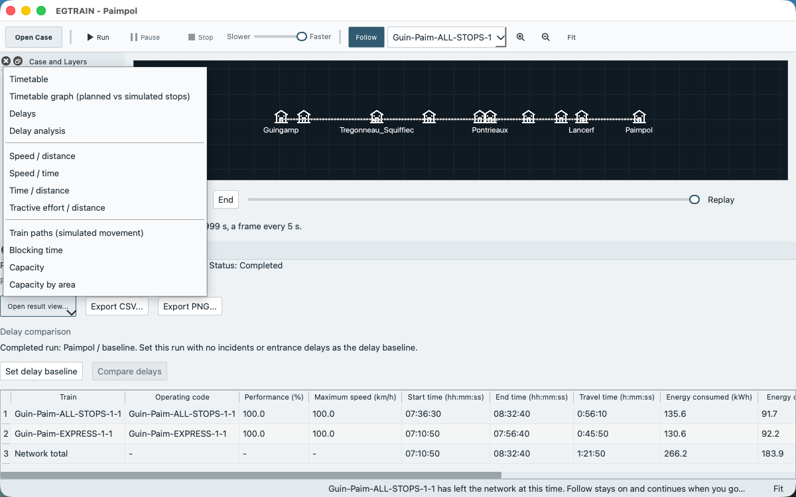

Getting started¶
This page takes you from a download to a finished run of the Paimpol case study, its results and two exported files. Paimpol is a small line with 6 tracks, 10 stations and 2 services, and it runs in seconds. You need only the downloaded program. You do not need the source code, a build or the command line.
The steps use the labels of the window. A label such as Run is a menu entry or a button, and a name such as Paimpol is a case. On macOS the key Ctrl in a shortcut is the Command key.
This walk was done on macOS. On Linux (an Ubuntu 24.04 desktop in a container, 2026-10-17) the first steps were repeated with the program built from source: opening Paimpol, the dialog Run simulation, the run, the results table and the output folder ~/.local/share/EGTRAIN/EGTRAIN/Output/Paimpol matched this page, with Ctrl as the shortcut key. The AppImage is started and walked through these steps by the Linux rehearsal job of each release run; its install step was not walked by hand. On Windows 11 (the release candidate of 2026-10-17, installed per user) the cases opened and ran as on this page, the dialog Run simulation and the results table matched it, and each case that was opened or run had its output folder under %APPDATA%\EGTRAIN\EGTRAIN\Output.
Three things to keep apart¶
The case is the input: the network, the rolling stock, the services and the scenario. Opening a case does not change it, and a run does not change it. Only your edits do, and only a save writes them.
Playback is what you watch while a run is active: trains move on the network view as the simulation produces steps. A run that you stop leaves no results.
Results are what a run that reached its end leaves in memory: the dock Run Results, the result windows, the replay row and the output files. Any edit of the case, a new case or another scenario discards them. Saving the case does not save them.
The glossary defines the other words of the program.
1. Install and start¶
Download the package for your system from the releases page. Installing EGTRAIN has the steps for each system, including what to do when macOS or Windows warns before the first start.
macOS: open the disk image, drag
QEGTRAIN.appontoApplications, and start it from there. A copy kept in a folder inside your home folder can make macOS ask for access to Desktop, Documents and Downloads at the first File > Open Case Study…: in column view the file dialog then lists your home folder.Windows: run
EGTRAIN-Setup-<version>-x64.exeand start EGTRAIN from the Start Menu, or unzipEGTRAIN-Portable-<version>-x64.zipinto a new, empty folder and runQEGTRAIN.exe.Linux: make the AppImage executable and run it. On a minimal system that reports a missing library such as
libGL.so.1, installlibgl1,libharfbuzz0bandlibfontconfig1first.
The packages contain the example cases, so you need no separate case file. If you prefer a file, download Paimpol.egscene from the same page.
2. The first start¶
EGTRAIN asks its questions in this order. Some appear only once.
Recover Unsaved Work appears only when an earlier session ended with unsaved edits. A first start has nothing to recover. After Recover, the list of the next step does not appear; open Paimpol with Open Case in the toolbar. See If something goes wrong.
Open a Case opens over the case that EGTRAIN has loaded already (Netherlands, unless you chose another). The list has the group Bundled cases, which holds the example cases of the package, and the group Recent cases, which lists other cases you opened or saved before. Select Paimpol and click Open, or double-click it. A long name is shortened in the middle of its row; hold the pointer over the row to see the whole name and the path. The first entry of the list is already selected when the window opens, so select
Paimpolitself before you click Open. Continue keeps the loaded case.
When the earlier steps are done, and Open a Case has closed if it appeared, the first start only may also ask Check for EGTRAIN updates automatically? Either answer works: Check Automatically or Don’t Check Automatically. Help changes the choice later. See Updating EGTRAIN.
The toolbar button Open Case shows Open a Case again whenever you want to open another case. If you started EGTRAIN by opening a .egscene file, or if the list does not show Paimpol, use File > Open Case Study… and select Paimpol.egscene instead. The file dialog starts in the folder above the open case, and on macOS, with no case open, in the Scenes folder of the app. Opening an .egscene case study describes that.
3. Look at the case¶
When Paimpol has loaded:
The window title reads
EGTRAIN - Paimpol, and the status bar readsScene loaded: Paimpol (2 services, 15 routes).The network view shows the tracks and stations. Turn the mouse wheel to zoom around the pointer and drag to move the view. On a trackpad, two fingers move the view and a pinch zooms. Click Fit (Ctrl+0) in the toolbar to see the whole network again. A click on a track, station or signal opens an information panel for it. To find a station, signal or train by name, choose Edit > Find… (Ctrl+F).
The dock Case and Layers on the left names the case under Current case study and says Ready to run. When validation finds an error, the line shows the first error instead and Run is disabled. The check boxes under Layers switch parts of the picture on and off: Stations and platforms, Station names, Trains, Train speed labels, Signals and Passengers. View > Map key explains the symbols. Passengers is off at the first start and is the same switch as View > Show Passengers. Turning it on shows the passenger markers, counters and platform bars from the next run, and turning it off hides them at once. A case without passengers disables both controls.
-pax 1(the option) starts with passengers on, and the program remembers the last choice.The toolbar holds Open Case, Run, Pause, Stop, a speed slider with the current speed next to it, Follow with the list of trains, the zoom buttons and Fit.

The editors, Scene Validation, Loaded Data and Console Log are hidden when the window opens. The menu Editors opens the editors, and the menu View opens the other docks.
Validation¶
EGTRAIN checks the case when it opens, after every edit and before every run. An error stops a run, and a warning does not. Paimpol has no errors. It has a few hundred warnings, nearly all with the code scene.passenger.legs.empty (a passenger journey without route-choice legs), and they do not matter for this walk.
To see the findings, choose View > Scene Validation (Ctrl+Shift+V). The table lists each finding with its Severity, Code, Message, File, Path and Suggested Fix. The status bar names validation only when it finds an error (Not ready: N validation error(s) must be fixed). View > Advanced / Developer details adds the counts, as in Validation: 0 error(s), N warning(s), and the dock Loaded Data.
4. Run the simulation¶
Click Run in the toolbar, or choose Simulation > Run (Ctrl+R) or File > Run Scene. The three do the same.
The dialog Run simulation reviews the run before it starts. Under the name of the case and the scenario (
Paimpol / baseline) it shows Selected in period (2: both services enter during the run), Start clock (07:10:40), Duration (2:30:00, ending near 09:40:40) and Active incidents (0). It saysReady to run.when nothing needs your attention. Run details shows more.
Click Run simulation. Cancel returns to the window without a run.
While the run is active:
The progress bar under the network shows the clock time, the step (
Step n of m) and the end time. The status bar readsRunning scene: Paimpol, and the trains move on the network view. On this long line they are small at the full view: choose a train in the list next to Follow, or zoom in on a station, to see one.
Move the speed slider to the right to play faster or to the left to play slower. It starts at the fastest setting. Pause (Ctrl+.) stops the clock, and the button then reads Resume. Stop (Ctrl+Esc) ends the run, and a stopped run leaves no results.
To keep a train in view, choose it in the list next to Follow and click Follow. Zooming and dragging still work.
The menu Editors still opens every editor, but the contents of Services, Passengers, Infrastructure and Incidents are disabled, and so are Edit > Undo, Edit > Redo and File > Set Output Folder…. The editors Case Settings, Rolling stock units and Compositions stay usable, but an edit there discards the results of that run, so wait for the run to end first.
At the fastest speed the run of Paimpol takes seconds. When it has ended, the status bar reads Simulation complete - results in the Diagrams menu, the dock Run Results opens, and the Replay row appears under the network. If a train was still followed at the end, the text reads Simulation complete - Follow disabled instead. Follow also switches off when the followed train leaves the network, so in Paimpol it is usually off before the end.
5. Replay the run¶
The Replay row has Start, Play, End, a slider and a label such as Replay at 1230 s. Moving the slider or clicking Start or End shows the network as it was at that time, and Play advances one simulated second for each second of real time. The row records one frame every 5 simulated seconds and shows the last frame at or before the chosen time. The text under the controls says which part of the run it holds. A run that is too large for the replay memory loses its first part, and the text says so. How-to has the details.
6. Read the results¶
The dock Run Results names the run in its title and in the lines at its top, for example Run: Paimpol / baseline, Occurrences: 2/2 selected and Status: Completed. When some ticked occurrences enter outside the run period, the line Occurrences also gives the number inside it, as in Occurrences: 196/196 selected, 185 in the run period; that number is the Selected in period of the dialog Run simulation. Its table has one row for each train and a last row, Network total. The trains of Paimpol are Guin-Paim-ALL-STOPS-1-1 and Guin-Paim-EXPRESS-1-1. The columns are Train, Operating code, Performance (%), Maximum speed (km/h), Start time (hh:mm:ss), End time (hh:mm:ss), Travel time (h:mm:ss) and four energy columns in kWh.
To open a result window, click Open result view… in the dock and choose an entry, or use the menu Diagrams. Two to try first:
Speed / distance (Diagrams > Speed / distance) plots the speed of each train against the distance it covered. Hover a line to read a value, click a line to select its train, and drag a rectangle to zoom. Inspecting diagrams describes the controls.
Timetable (Diagrams > Timetable) lists each stop of each train with its planned and simulated arrival and departure and the delays.
The other entries are listed in How-to. The entries stay disabled until a run has ended.

7. Export one CSV and one PNG¶
In the dock Run Results, click Export CSV…. The dialog Export Data suggests the name
run_summary.csv. Choose a folder of your own and save. The file has one row for each train and the row Network total.Click Export PNG…. The dialog Export Table suggests
run_summary.png. Save it. The picture shows the table as it appears in the dock.
Each result window has its own Export CSV… and Export PNG… for the data and the chart of that window. Every export writes a second file with the same name plus .provenance.json, which records the run that produced it. Keep the two files together.
An export dialog starts in your Documents folder, or in your home folder when there is none. Exports are not written to the output folder below.
8. Where the other output goes¶
A run also writes text files, such as the energy files and the delay statistics. They go to the output folder <application data folder>/Output/Paimpol:
System |
Application data folder |
Checked |
|---|---|---|
macOS |
|
yes |
Windows |
|
yes, on Windows 11 |
Linux |
|
yes, on Ubuntu 24.04 |
The Windows entry follows the rule of Qt for the application data folder. File > Set Output Folder… chooses another folder for the following runs of the session. Command-line options explain the rule and QEGTRAIN_OUTPUT_DIR, and Run output lists the files.
If something goes wrong¶
Run is disabled. No case is open, a run is active, or validation reports an error. Open View > Scene Validation and read the first error. How-to lists the reasons for the other disabled commands.
Cannot Run Scene. The message names the problem: validation errors, or no selected service occurrence.
Cannot Open Case Study. The file is damaged or is not an EGTRAIN case. Keep the message, and download the file again. Opening an
.egscenecase study lists the other dialogs for a scene that does not open.Unsaved Scene. Before EGTRAIN replaces a case that has unsaved edits, it asks Save, Discard or Cancel. On macOS this is a sheet without a title, and the buttons are Save, Cancel and Don’t Save. Cancel keeps the case and its edits. For an installed example case, Save asks for a new
.egscenefile and never writes into the installation.Recover Unsaved Work. While a case has unsaved edits, EGTRAIN keeps a recovery copy and updates it about every 30 seconds. If EGTRAIN closed before you saved, the next start offers Recover, Discard and Decide Later. Recover opens the copy as an unsaved case. Choose File > Save Case Study As… to keep it.
Undo. The Edit menu has Undo and Redo for edits of the case.
Nothing happened after a run. If you stopped the run, there are no results. Run it again and let it end.
Known limits¶
No supplied case study has signals. Each has one signalling area at level 0 over the whole network, so none of them shows the separation of trains by signals. See The committed scenes.
The case
Assignment_Gvc_Gdg_Utis a synthetic fixture, not a case with source-backed railway data. See Assignment workflow.The Windows files are not code signed, and the macOS app is not notarized unless the release notes say so. Installing EGTRAIN says what the first start shows.
EGTRAIN keeps the newest 20 recovery copies of unsaved work.
Next¶
This manual is also in EGTRAIN: Help > EGTRAIN Manual opens it with its contents and search, and F1 opens the section about the window you are in when the manual has one, otherwise its start page.
How-to: recipes for opening and saving, editing a timetable, scenarios and baselines, canvas navigation, results and legacy cases.
Opening an
.egscenecase study: bundles, version checks and opening by double-click.Editing and validating a case, Scenarios and the student loop and the scene schema: the editors, the scenarios and the scene files.